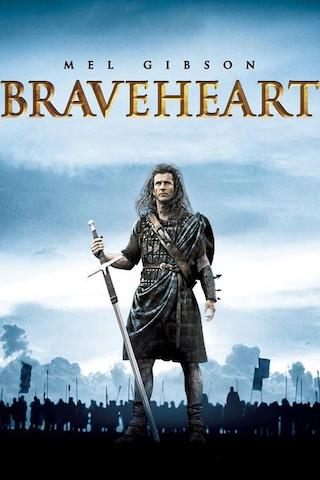
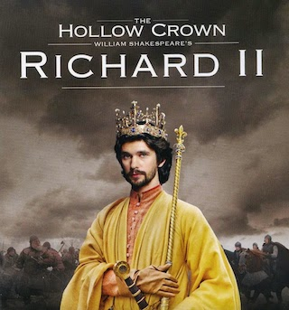
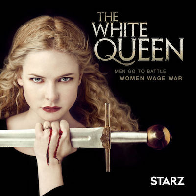
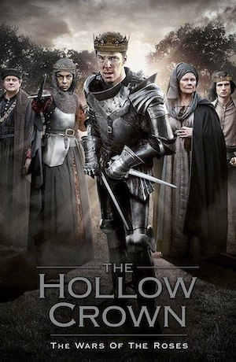
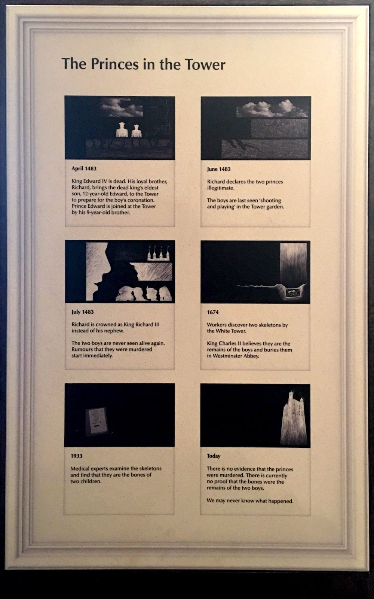
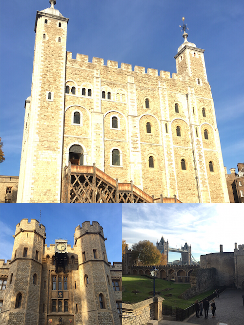
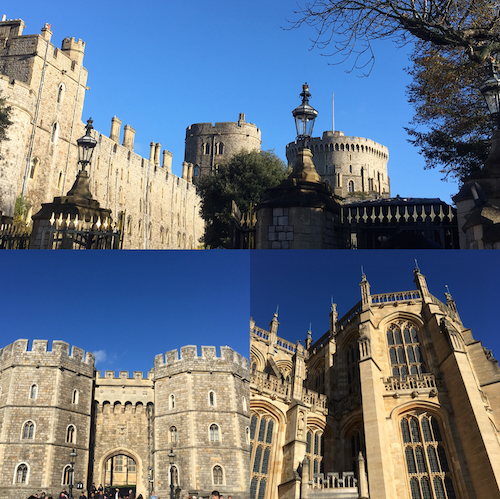

爱德华一世
长腿爱德华，文治武功，军事家，谋略家，金雀花王朝的代表人物。
-
威尔士的征服者
授予王储威尔士亲王之位，这种传统沿袭至今。
-
苏格兰之锤
《勇敢的心》中，华莱士为首的苏格兰民族起义，反抗的就是这位英格兰国王。影片着重刻画了他阴险残忍的一面，包括恢复初夜权，鸿门宴吊死苏格兰贵族。
-
《冰与火之歌》中泰温·兰尼斯特的原型
他们的相似之处除了王者威严和政治手段外，还有对子女的苛刻和失望，尤其是对他的继承者，爱德华二世。

爱德华二世
败家作死小能手，宠溺同性情人，最终被王后及其情夫废黜，传闻被烧红的铁棍爆菊而死。
爱德华三世
-
夺宫
爱德华三世年少即位，他的母亲法兰西母狼伊莎贝拉（尽管虚构成分很大，但她最广为熟知的形象还是《勇敢的心》中的苏菲玛索）及其情夫马奇伯爵摄政。爱德华三世成年亲政后，杀掉马奇伯爵，树立威信，恢复对贵族的控制力，爱德华一世的基因似乎得到了隔代遗传。
-
百年战争
主张自己拥有法国王位继承权，爱德华三世掀起了英法百年战争，重挫法国，深入境内，活捉法国国王约翰二世，取得阶段性胜利。在这场战争中，他的长子，黑太子爱德华功不可没。黑太子英俊潇洒，骁勇善战，是《冰与火之歌》中疯王之子雷加的原型，最终也同样战死沙场。
-
后继无人
爱德华三世在黑太子死后一年离世，王位传给了黑太子的长子，理查二世，金雀花王朝的最后一位国王。他年仅10岁便即位，残暴，乖戾，嗜血，不得不让人联想到乔弗里。爱德华三世的两支后裔，分别开创了兰开斯特王朝和约克王朝。《冰与火之歌》现实中的主背景——玫瑰战争——即将开始。

爱德华四世
-
继承父志
约克公爵理查品德高尚，但不谙政治。败于兰开斯特家族后，被安茹的玛格丽特（瑟曦的原型）将头颅挂于城墙之上，甚至带上纸质的王冠羞辱。很明显，他就是奈德·史塔克的原型。他的长子，爱德华四世成为了约克家的新领袖，在战场上可谓上天眷顾之人，一生未尝一败。年仅19岁便完胜兰开斯特家族，在伦敦入主为王，开创了约克王朝。
-
《冰与火之歌》中少狼主罗柏·史塔克的原型
两人同样在战场上所向披靡，年少称王，同样违背了自己的支持者提出的政治婚姻。爱德华四世娶了平民出身的寡妇——伊丽莎白·伍德维尔。虽没有造成血色婚礼那样惨烈的直接后果，但约克王朝仅仅维持了短暂的25年与此确实有很大关系。此举将造王者沃里克伯爵从盟友变为敌人，再次点燃了玫瑰战争本将熄灭的战火。
-
托孤与玫瑰战争的终结
爱德华四世病危之际，王储尚且年幼，他担忧王后外戚影响力过大，转而信赖自己的血亲，任命自己的弟弟——日后的理查三世——为摄政王。然而，在他死后不到一年，理查三世便宣布爱德华四世与伊丽莎白·伍德维尔的婚姻不合法，其子没有继承权，进而自立为王。理查三世是一位有政治和军事天赋的君主，然而仅仅在位两年便被流亡法国的亨利七世（丹妮莉丝·坦格利安的原型）击败，战死沙场。持久而惨烈的玫瑰战争结束了，贵族在这场战争中消耗殆尽，中央集权的都铎王朝开始了。

瑞典女演员丽贝卡·弗格森，柔弱又刚强，有种无法形容的魅力。
让她更广为人知的是《碟中谍5》和《碟中谍6》中干练迷人的英国特工形象。

理查三世在多数文学作品中都被塑造为驼背丑陋的暴君形象。
短短在位两年，极具争议，留下塔中王子，王室血统等未解疑团。
爱德华五世
- 塔中王子
作为爱德华四世的长子，即位不到一年，便与弟弟一起被理查三世囚禁到伦敦塔中，之后便有传言两位王子被杀。1674年，伦敦塔整修时发现了两具儿童的尸骨，当时的国王查理二世相信这就是两位王子的骸骨，授意将他们葬在了威斯敏斯特教堂。


毗邻泰晤士河与塔桥的伦敦塔是一座千年古堡，是要塞，是宫殿，也是监狱。
塔内收藏着王室珠宝，并依然生活着象征英国国运的渡鸦。
爱德华八世
- 温莎公爵
跳过爱德华六世，七世，便到了近代。因为教会和政府都反对他迎娶再婚的辛普森夫人，爱德华八世选择主动退位，将王位传给了自己的弟弟乔治六世（《国王的演讲》与《至暗时刻》中的英国国王），当今女王伊丽莎白二世的父亲。为了爱情放弃王位，正可谓倾国之恋，爱情童话。然而童话往往都有另一个版本，温莎公爵夫妇对于政治影响力充满渴望，包括积极会见希特勒等种种迹象表明，爱德华八世的退位并非自愿。
